Preplan Hogarth Center Renovation
Constructed as two separate wings, in 1962 and 1968, respectively, Mississippi University for Women’s Hogarth Student Center has anchored a prominent site on campus for over 60 years. The two-storey facility was designed so that the two wings were never connected at the interior, resulting in a dysfunctional, exterior-circulated and less-used facility for the entirety of the building’s life. One end of the building was anchored by dining facilities, and the other with Student Life activities. Over time, the building fell into less and less use due to the difficulty of navigating the overall building footprint.
The purpose of the current project is to re-imagine the building and its function to respond better to a 21st century college student’s needs, connecting the two buildings with continuous, clear circulation to enliven and reinforce the activities of each of the original wings. In the revised plan, the kitchen, dining, and banquet room will enjoy full modernization and clear entrance and connection to the Student Life wing, with a new C-store and student orientation/special dining room weaving together the two ends of the building. At the Student Life end of the footprint, gathering, study, and gaming functions will be added to better meet the needs of today’s student, the bookstore will be re-considered for vitality, and office function areas will be reconsidered to relocate Student Life and similar functions back into the Hogarth Center. Sitework will include an inviting and accessible redesign of the Student Life entrances, as well as a renovation of the existing rear courtyard situated among the original architectural elements. Along with complete accessibility throughout, all mechanical and electrical systems will be replaced, and the 1960’s mod design will be subtly celebrated throughout the facility.
 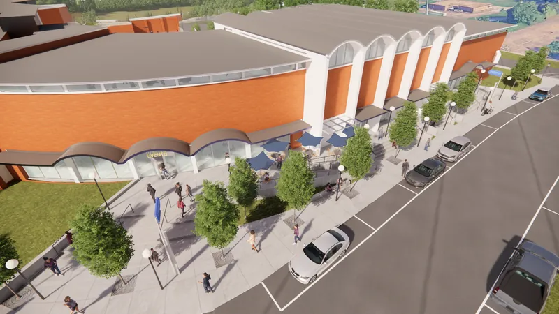
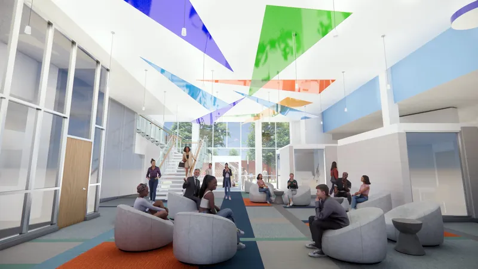
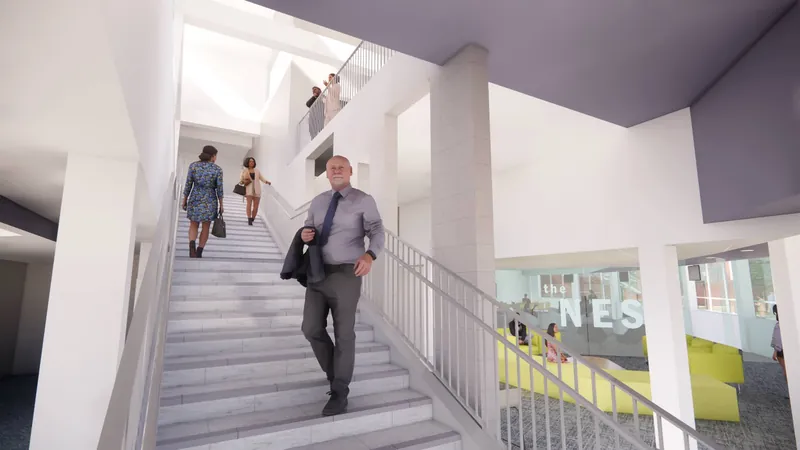
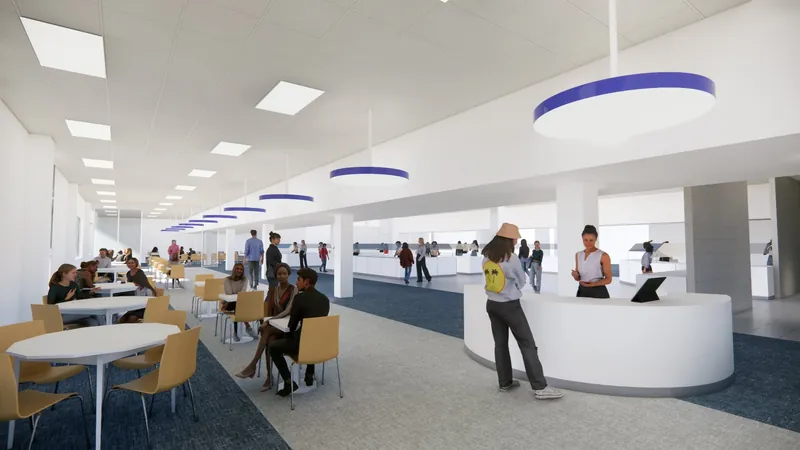
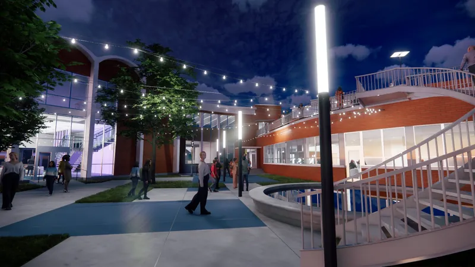
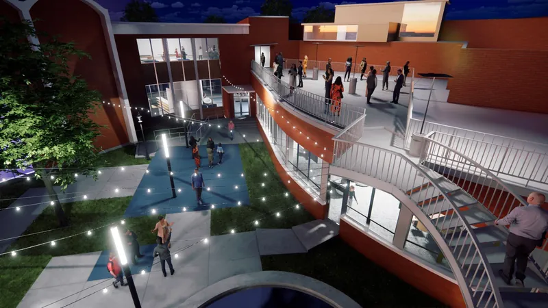
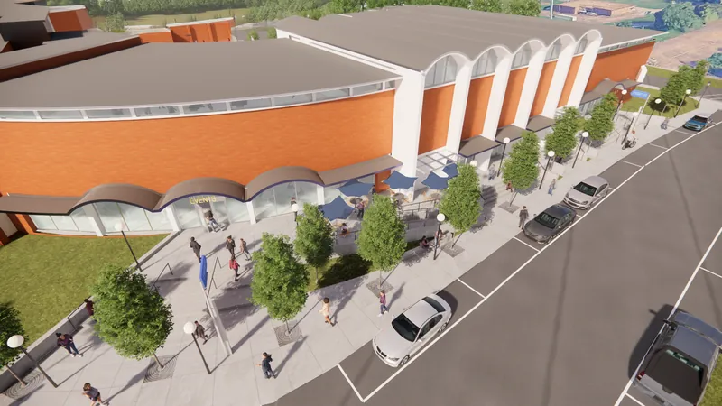
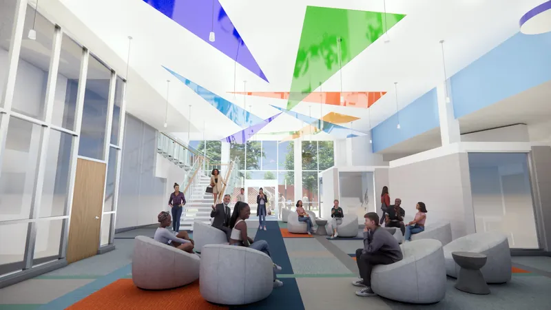
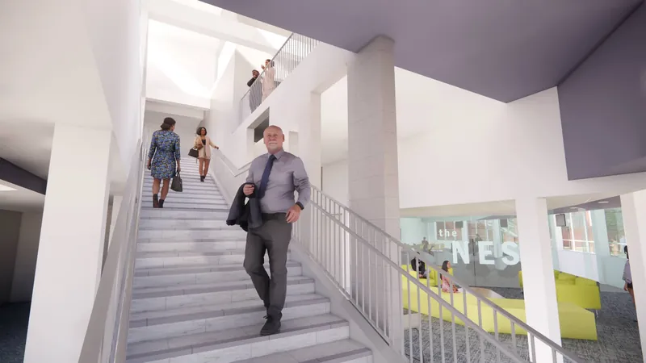
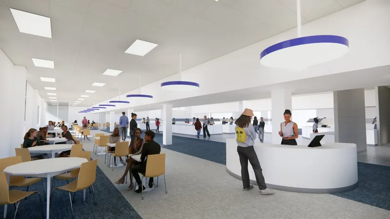
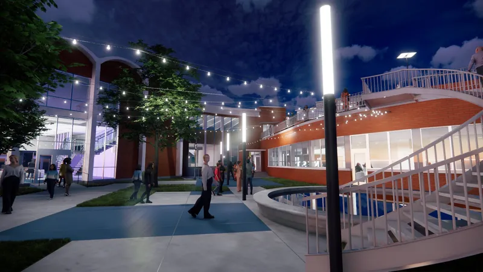
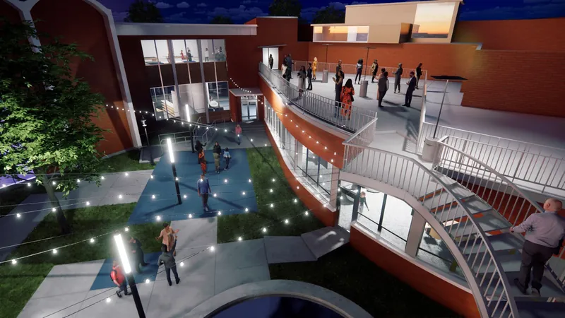